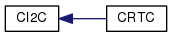
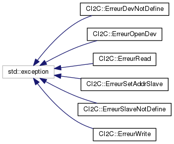

CRTC
Page principale
Classes
Fichiers
Liste des classes
Index des classes
Hiérarchie des classes
Membres de classe
Tout
Classes
Fichiers
Fonctions
Variables
Énumérations
Valeurs énumérées
Pages
Hiérarchie des classes
Aller à la hiérarchie des classes en mode texte


Généré le Vendredi 20 Mars 2015 11:07:21 pour CRTC par
1.8.8
 1.8.8
1.8.8